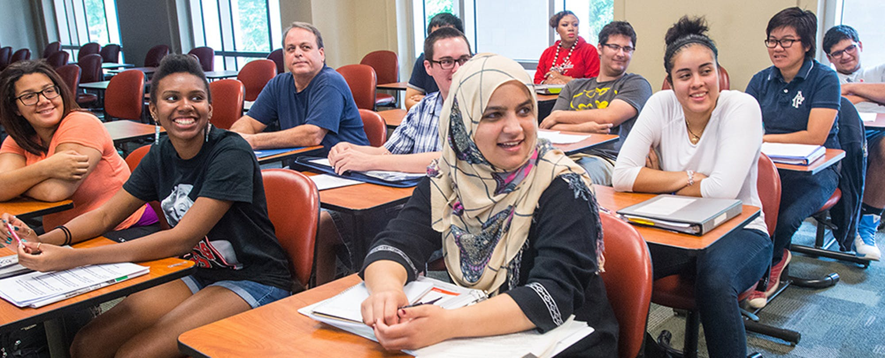
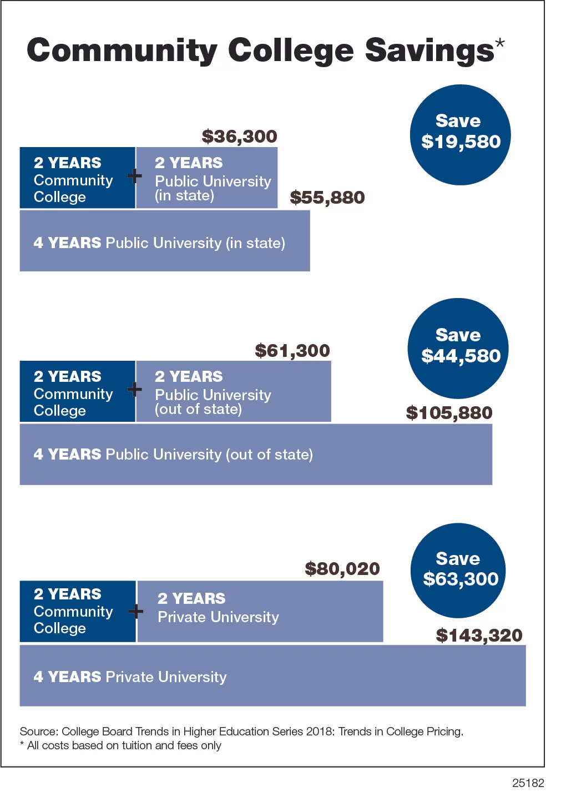

Transferring from a Community College to 4-Year University
  "Nearly 11 million students each year attend community college. Some choose community college to save thousands of dollars on tuition for the first two years of schooling, while others opt to attend community college to determine which major interests them most. Most transfer programs anticipate that you will complete your first two years at community college, then transferring to a four-year institution as a junior. As a transfer, you essentially have two main goals: demonstrate that you are academically competitive in your major, and ensure that you can transfer over a maximum number of credits. Both of these are important in not only helping you gain acceptance into the university of your choice, but also in graduating on time from that four-year institution."Grace Chen, "Transferring from a Community College to a 4-Year Institution";
https://www.communitycollegereview.com/blog/transferring-from-community-college-to-a-4-year-institution